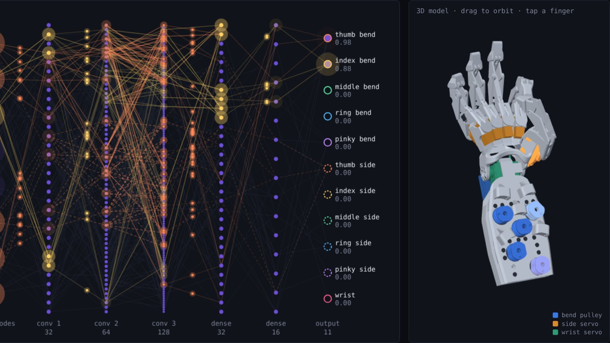

Neural interfaces and robotics
NeuroGrip
Intelligent EMG-Based Robotic Hand Control
A robotic hand I control in real time using neuromuscular signals recorded from my forearm.

Why I built it
I've long been interested in how neural interfaces can make machines respond more directly to our intentions. To explore that hands-on, I built a working prototype that uses electromyography (EMG), the electrical activity of muscles, to turn movement intent into physical control.
What I built
I assembled the 3D-printed hand and developed the full pipeline: collecting and processing 8-channel EMG data, training a neural network in PyTorch, and driving the servos through an Arduino.
The hand has 11 degrees of freedom:
- 5 finger flexion movements, each driven by a forearm pulley that pulls a pair of tendons (front and back)
- 5 side-to-side finger movements, each driven by a servo in the knuckle
- 1 wrist movement
The hardest problem
The hardest problem was turning accurate predictions into stable movement. The model's output could flicker even while I held the same pose. I fixed this by adding a temporal-consistency term to the training loss, which penalizes disagreement between nearby EMG windows from the same held pose. I then tuned the inference filtering to balance stability against response time.
Hardware
On the hardware side, I balanced tendon tension against spring forces, reduced friction between moving parts, and worked out the servo power distribution. To check joint ranges before testing on hardware, I built a kinematic simulator from the hand's CAD assembly. It solves each finger's linkage from the real pin positions and flagged where the fingers would hit the palm.
Interactive demos
Both run in the browser and use the hand's real 3D model.
EMG network demoVideo matchTry it on the home pageJoint simulator
Bringing signal processing, machine learning, electronics and mechanics together into one working system was the most rewarding part of this project.